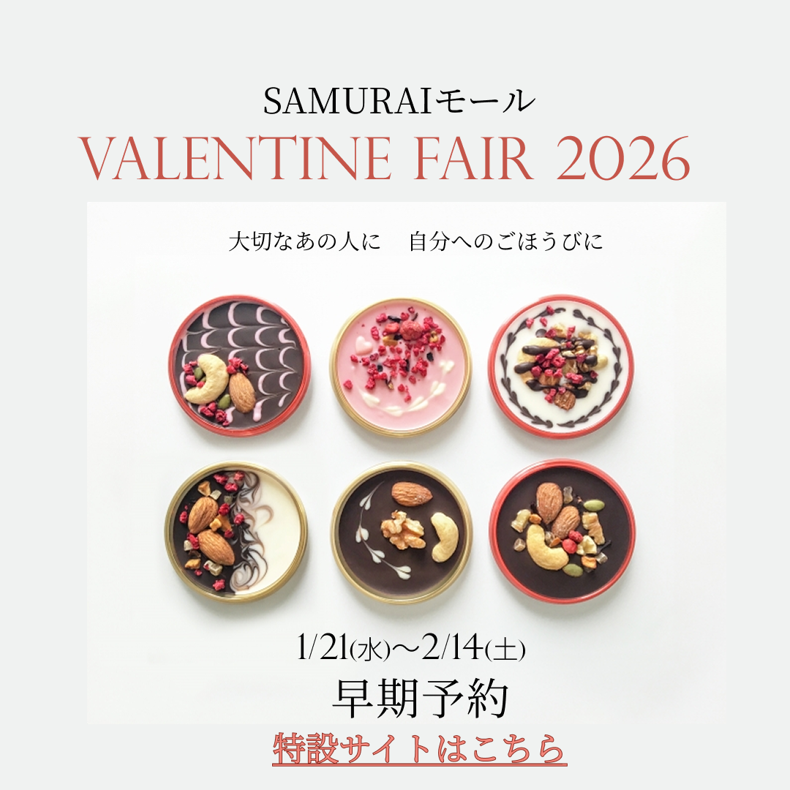

WEBデザイン
架空
バレンタインフェアバナー

概要
架空のモール「SAMURAIモール」のバレンタインフェスのイベント宣伝バナー。 20代～30代の女性をターゲットとし、高級感のあるデザインを希望。
使用ツール
Figma
制作時期
2026年1月作成 デザイン 2時間
意識したこと・所感
初めてのバナー作成だったので余計なことはせず、とにかく見やすさを意識しました。
要素を詰め込みすぎず、余白を活かしたレイアウトにすることで、情報の「見やすさ」とブランドの「信頼感」を両立させています。
Figmaでの自由な発想を形にしつつ、実務を意識した優先順位の整理を学んだ作品です。